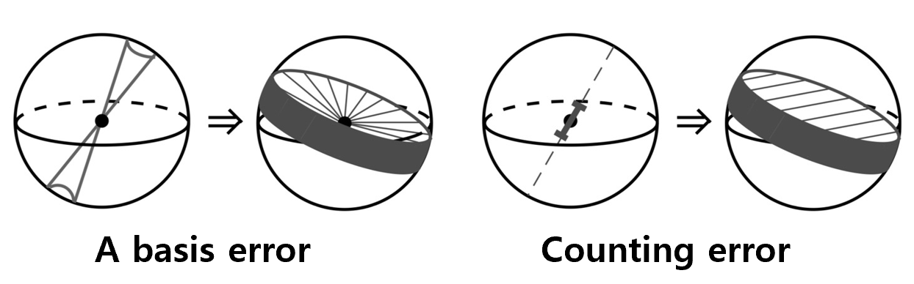
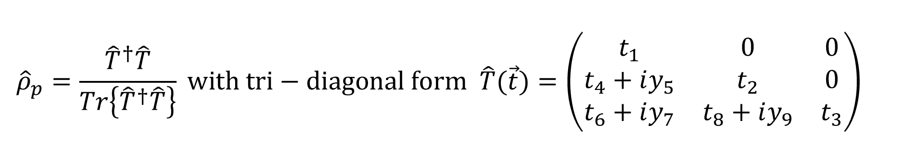
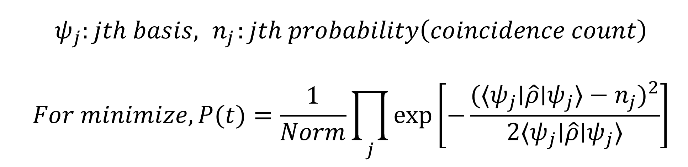
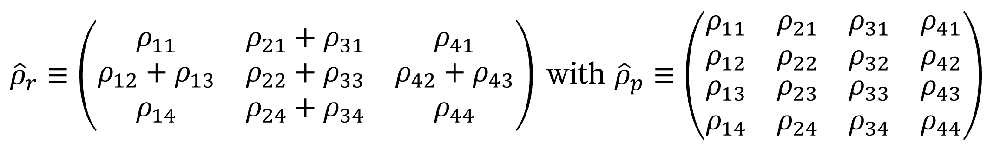
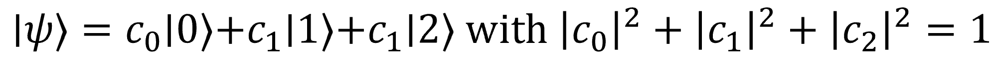
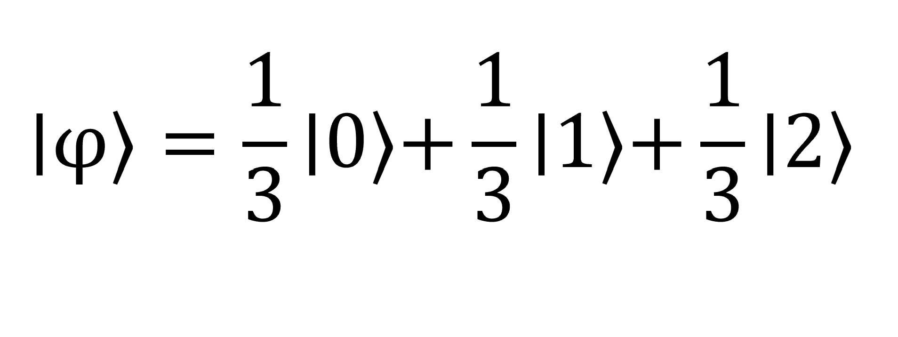
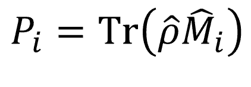
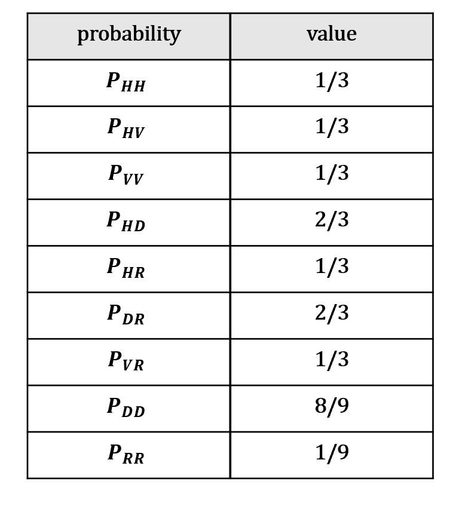
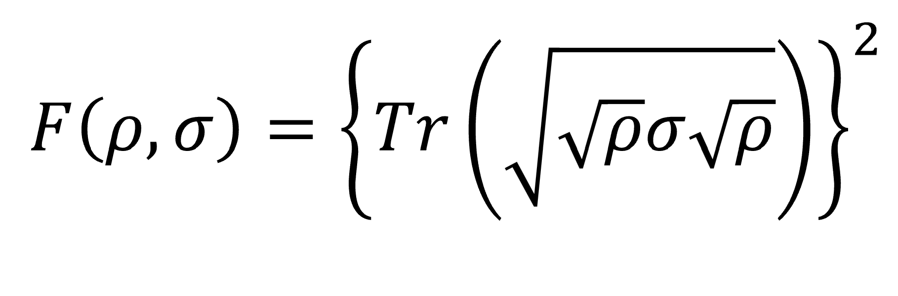

Quantum State Tomography (Qutrit)
What is the quantum state tomography?
Before we study quantum state tomography, it's better to know what Tomography means.
Tomography, it means 'the use of X-rays to make three-dimensional images of flat sections of the body'. For example, roughly like this as belows.
While 3D space does have three degrees of freedom in the context of rigid body motion, creating an accurate 3D image from tomographic data requires more than just three 2D images. This is because capturing the internal structure of an object in 3D space involves more complexity and detail than what is possible from only three projections.
The same goes for quantum state tomography. Quantum State Tomography is the process by which an identical ensemble of unknown quantum states is completely characterized. A sequence of identical measurements within a series of different bases allow the reconstruction of a complete quantum state wavefunction.
To do this, it has to overcome the ‘hidden’ nature of the quantum state; remember, the state can’t be directly determined by a measurement – by performing repeated preparations of the same quantum state, which is then measured in different ways in order to build up a complete description of the quantum state.
Why don't we directly construct the density matrix of quantum state?
This question also asks why optimization methods like MLE are necessary.
It occurs three main errors in the measurement of a density matrix; errors in the measurement basis(imperfection of wave plates), errors from counting statics, and errors from experimental stability.
A basis error means that it can result in an accurate measurement being taken in an unintended basis and an uncertainty in the measurement basis can have on the reconstruction of a state. This uncertainty in axis is translated into an uncertainty in the state. Instead of isolating the state to a plane, all possible measurement axes trace out a volume with large uncertainty near the surface of the sphere and low uncertainty near the center.
Counting error means that only a limited number of qubits can be measured to gain an estimate of a state's projection onto this axis. This uncertainty results in an unknown state being isolated to a one-dimensional guassian in three-dimensional space, rather than to a plane.

They result in an error which approximates the position of the unknown state. However, the global maximum can often be outside allowed Hilbert space (outside the Poincaré sphere). which is one reason a MLE must be used to search over only allowed quantum states.
How can we overcome the hidden nature of the quantum state?
Overcoming the hidden nature of quantum state means that we should use the optimization method (maximum likelihood estimation, linear regression... etc).
Because it is very possible, especially with low counts or with the measurement of pure states, that state estimation will return an
The problem of reconstructing illegal density matrices is resolved by selecting the legitimate state most likely to have returned the measured coincidence counts. Then three elements are required.
1. A manifestly legal parameterization.
2. A likelihood function can be maximized.
3. A technique for numerically finding this maximum over a search of the density matrix's parameters.
And the Stokes parameters are an unacceptable parameterization for this search, as there are clearly combinations of these parameters which result in an illegal state. In this context, a legitimate state refers to a non-negative definite Hermitian density matrix of trace 1.
In order to reconstruct physical density matrix, it satisfies mathematically as belows.

A likelihood function will depend on the specific measurement apparatus used and the physical implementation of the qubit(as these will determine the statistical distributions of counts, and therefore their relative weightings).
If we assume Guassian counting statistics, then we can easily provide a suitable likelihood function.

For mathematical convenience, we change it to the Log Likelihood function. Notice that the normalization constant is ignored for this function, because it will not affect the miniminum.
Additionally, by multiplying the likelihood function by -1, we can switch from 'minimization' to 'maximization'.
How can we get the idea for constructing directly qutrit tomography?
There is a method to reduce two-qubit tomography to single-qutrit tomography, as shown in the picture below, but we are looking for a way to achieve a direct reduction.

In our case, by using polarizations of two photons, we'll define the basic state as below. It means that we restrict two photons to be indistinguishable temporally such as HV=VH.

It is mathematically equivalent to the sum of the second and third elements of a two-photon state like this.
By restricting two photons to a qutrit, pure polarization state of a single qutrit can be written as,

Construct the single qutrit tomography step by step.
Before running the code, import them.
from scipy.optimize import minimize import numpy as np import matplotlib.pyplot as plt from qiskit.visualization import array_to_latex from scipy.linalg import sqrtm
To construct the tomography more accurately, let's assume that instead of counting count, we have an arbitrary test state. For example, our test state is as follows.

alpha = 1 beta = 1 gamma = 1 coeff = 1 / np.sqrt(np.abs(alpha)**2 + np.abs(beta)**2 + np.abs(gamma)**2) test_state = coeff*np.array([alpha, beta, gamma]) rho_t = np.outer(test_state,test_state.conj()) print(rho_t)
STEP 1. Set the proper nine bases for capturing every appearance.
For easier experimental implementation, nine out of 36 polarization states of two photons were selected with the condition that they capture every appearance of unknown state.

And satisfying above conditions, we select the nine bases: HH, HV, VV, HD, HR, DR, VR, DD, RR.
HH = np.array([1, 0, 0])
HV = np.array([0, 1, 0])
VV = np.array([0, 0, 1])
psi1 = HH # HH
psi2 = HV # HV, VH
psi3 = VV # VV
psi4 = 1/np.sqrt(2) * np.array([1, 1, 0]) # HD, DR
psi5 = 1/np.sqrt(2) * np.array([1, 1j, 0]) # HR, RH
psi6 = 1/np.sqrt(4) * np.array([1, 1+1j, 1j]) # DR, RD
psi7 = 1/np.sqrt(2) * np.array([0, 1, 1j]) # VR, RV
psi8 = 1/np.sqrt(6) * np.array([1, 2, 1]) # DD
psi9 = 1/np.sqrt(6) * np.array([1, 2j, -1]) # RR
basis =[psi1, psi2, psi3, psi4, psi5, psi6, psi7, psi8, psi9]
STEP 2. Construct nine measurement operators.
With a set of bases, construct the measurement operators corresponding to coincidence count each other.
def measurement(psi):
psi = np.array(psi, dtype=np.complex128)
return np.outer(psi, psi.conj())
measurement_op = [measurement(psi) for psi in basis]
STEP 3. Find the probability, which is equivalent to finding the normalized coincidence count.
If you have experimental data, specifically the coincidence count, this step is necessary. It's simply the process of obtaining a normalized coincidence count, which we can then use.

n = [np.trace(measure @ rho_t).real for measure in measurement_op] print(n)
And it's the probability of each basis with my test state. This data is just normalized coincidence count, HH + HV + VV = 1.

STEP 4. Optimize with Log Maximum Likelihood estimation for reconstructing density matrix.
By using the T matrix, the following three physical constraint conditions are satisfied:
(1) Hermiticity : The density matrix must be Hermitian.
(2) Positive Semi-Definiteness : The density matrix must have non-negative eigenvalues, meaning that for any vector.
(3) Trace Condition : The trace of the density matrix must be equal to one.
def compute_rho(T_matrix):
product = T_matrix @ T_matrix.conj().T
rho = product / np.trace(product)
return rho
initial_t = [-0.1] * 9
bounds = [(-1, 1)] * 9
def log_ml(t):
T_matrix = np.array([
[t[0], 0, 0],
[t[3] + 1j * t[4], t[1], 0],
[t[7] + 1j * t[8], t[5] + 1j * t[6], t[2]]
])
rho = compute_rho(T_matrix)
log_likelihood = 0
for j in range(len(n)):
prob = np.real(np.trace(rho @ measurement_op[j]))
log_likelihood += ((prob - n[j]) ** 2) / ( 2*prob)
return log_likelihood
result = minimize(log_ml, initial_t, bounds=bounds, method='L-BFGS-B')
optimal_t = result.x
# Compute Physical density matrix and Tunable matrix
T_op = np.array([
[optimal_t[0], 0, 0],\
[optimal_t[3]+optimal_t[4]*1j, optimal_t[1], 0],\
[optimal_t[7]+optimal_t[8]*1j, optimal_t[5]+optimal_t[6]*1j, optimal_t[2]]])
rho_p = compute_rho(T_op)
array_to_latex(T_op)
array_to_latex(rho_p)
STEP 5. Calculate the fidelity and purity with density matrix of the test state.
Fidelity is a measure of state overlap. That is, if the fidelity is 1, we have successfully reconstructed the physical density matrix. The fidelity between ùúå and ùúé is given by:

def fidelity(rho1, rho2):
sqrt_rho1 = sqrtm(rho1)
return np.trace(sqrtm(sqrt_rho1 @ rho2 @ sqrt_rho1)).real ** 2
print("Fidelity :",fidelity(rho_t, rho_p))
If fidelity > 1, the eigenvalue of the density matrix will be negative. In this case, The fidelity calculation is incorrect : Please retry it with F(ùúé,ùúå).
Purity can be seen as an indicator of order and disorder. Low purity suggests disorder, with probability elements ùëÉùëñ being similar and close to a uniform distribution, indicating high randomness. High purity, on the other hand, suggests order, with some ùëÉùëñ values being significantly larger, indicating preferred microstates and structure.
def purity(rho):
return np.trace(rho @ rho).real
print("Purity :",purity(rho_p))
STEP 6. Draw the 3D graph of single qutrit state tomography.
Reconstructed density matrix is :
real_amplitude = np.real(rho_p)
imag_amplitude = np.imag(rho_p)
row_labels = ["00", "01", "11"]
col_labels = ["00", "01", "11"]
fig = plt.figure(figsize=(16, 8))
def get_colors(values):
return ['#6da5d7' if val >= 0 else '#fc5557' for val in values]
ax1 = fig.add_subplot(1, 2, 1, projection='3d')
xpos, ypos = np.meshgrid(np.arange(len(col_labels)), np.arange(len(row_labels)), indexing='ij')
xpos = xpos.ravel()
ypos = ypos.ravel()
zpos = np.zeros_like(xpos)
dx = dy = 0.425
dz = real_amplitude.ravel()
colors = get_colors(dz)
ax1.bar3d(xpos, ypos, zpos, dx, dy, dz, color=colors, zsort='average')
ax1.set_title(r'Real Amplitude $\rho_p$')
ax1.set_xticks(np.arange(len(col_labels)))
ax1.set_xticklabels(col_labels)
ax1.set_yticks(np.arange(len(row_labels)))
ax1.set_yticklabels(row_labels)
ax1.set_zlim(np.min(real_amplitude) - 0.1, np.max(real_amplitude) + 0.1)
xlim = ax1.get_xlim()
ylim = ax1.get_ylim()
ax1.plot_surface(
np.array([[xlim[0], xlim[1]], [xlim[0], xlim[1]]]),
np.array([[ylim[0], ylim[0]], [ylim[1], ylim[1]]]),
np.array([[0, 0], [0, 0]]),
color='gray',
alpha=0.15
)
ax2 = fig.add_subplot(1, 2, 2, projection='3d')
dz = imag_amplitude.ravel()
colors = get_colors(dz)
ax2.bar3d(xpos, ypos, zpos, dx, dy, dz, color=colors, zsort='average')
ax2.set_title(r'Imaginary Amplitude $\rho_p$')
ax2.set_xticks(np.arange(len(col_labels)))
ax2.set_xticklabels(col_labels)
ax2.set_yticks(np.arange(len(row_labels)))
ax2.set_yticklabels(row_labels)
ax2.set_zlim(np.min(imag_amplitude) - 0.1, np.max(imag_amplitude) + 0.1)
xlim = ax2.get_xlim()
ylim = ax2.get_ylim()
ax2.plot_surface(
np.array([[xlim[0], xlim[1]], [xlim[0], xlim[1]]]),
np.array([[ylim[0], ylim[0]], [ylim[1], ylim[1]]]),
np.array([[0, 0], [0, 0]]),
color='gray',
alpha=0.15
)
plt.subplots_adjust(left=0.05, right=0.85, top=0.95, bottom=0.3, wspace=0.5)
plt.show()
Theoretical density matrix is :
real_amplitude = np.real(rho_t)
imag_amplitude = np.imag(rho_t)
row_labels = ["00", "01", "11"]
col_labels = ["00", "01", "11"]
fig = plt.figure(figsize=(16, 8))
def get_colors(values):
return ['#6da5d7' if val >= 0 else '#fc5557' for val in values]
ax1 = fig.add_subplot(1, 2, 1, projection='3d')
xpos, ypos = np.meshgrid(np.arange(len(col_labels)), np.arange(len(row_labels)), indexing='ij')
xpos = xpos.ravel()
ypos = ypos.ravel()
zpos = np.zeros_like(xpos)
dx = dy = 0.425
dz = real_amplitude.ravel()
colors = get_colors(dz)
ax1.bar3d(xpos, ypos, zpos, dx, dy, dz, color=colors, zsort='average')
ax1.set_title(r'Real Amplitude $\rho_t$')
ax1.set_xticks(np.arange(len(col_labels)))
ax1.set_xticklabels(col_labels)
ax1.set_yticks(np.arange(len(row_labels)))
ax1.set_yticklabels(row_labels)
ax1.set_zlim(np.min(real_amplitude) - 0.1, np.max(real_amplitude) + 0.1)
xlim = ax1.get_xlim()
ylim = ax1.get_ylim()
ax1.plot_surface(
np.array([[xlim[0], xlim[1]], [xlim[0], xlim[1]]]),
np.array([[ylim[0], ylim[0]], [ylim[1], ylim[1]]]),
np.array([[0, 0], [0, 0]]),
color='gray',
alpha=0.15
)
ax2 = fig.add_subplot(1, 2, 2, projection='3d')
dz = imag_amplitude.ravel()
colors = get_colors(dz)
ax2.bar3d(xpos, ypos, zpos, dx, dy, dz, color=colors, zsort='average')
ax2.set_title(r'Imaginary Amplitude $\rho_t$')
ax2.set_xticks(np.arange(len(col_labels)))
ax2.set_xticklabels(col_labels)
ax2.set_yticks(np.arange(len(row_labels)))
ax2.set_yticklabels(row_labels)
ax2.set_zlim(np.min(imag_amplitude) - 0.1, np.max(imag_amplitude) + 0.1)
xlim = ax2.get_xlim()
ylim = ax2.get_ylim()
ax2.plot_surface(
np.array([[xlim[0], xlim[1]], [xlim[0], xlim[1]]]),
np.array([[ylim[0], ylim[0]], [ylim[1], ylim[1]]]),
np.array([[0, 0], [0, 0]]),
color='gray',
alpha=0.15
)
plt.subplots_adjust(left=0.05, right=0.85, top=0.95, bottom=0.3, wspace=0.5)
plt.show()
The other bases.
""" HH = np.array([1, 0, 0]) HV = np.array([0, 1, 0]) HD = 1/np.sqrt(2) * np.array([1, 1, 0]) HA = 1/np.sqrt(2) * np.array([1, -1, 0]) HR = 1/np.sqrt(2) * np.array([1, 1j, 0]) HL = 1/np.sqrt(2) * np.array([1, -1j, 0]) VH = np.array([0, 1, 0]) VV = 1/np.sqrt(2) * np.array([0, 0, 1]) VD = 1/np.sqrt(2) * np.array([0, 1, 1]) VA = 1/np.sqrt(2) * np.array([0, 1, -1]) VR = 1/np.sqrt(2) * np.array([0, 1, 1j]) VL = 1/np.sqrt(2) * np.array([0, 1, -1j]) DH = 1/np.sqrt(2) * np.array([1, 1, 0]) DV = 1/np.sqrt(2) * np.array([0, 1, 1]) DD = 1/np.sqrt(6) * np.array([1, 2, 1]) DA = 1/np.sqrt(2) * np.array([1, 0, -1]) DR = 1/np.sqrt(4) * np.array([1, 1+1j, 1j]) DL = 1/np.sqrt(4) * np.array([1, 1-1j, -1j]) AH = 1/np.sqrt(2) * np.array([1, -1, 0]) AV = 1/np.sqrt(2) * np.array([0, 1, -1]) AD = 1/np.sqrt(2) * np.array([1, 0, -1]) AA = 1/np.sqrt(6) * np.array([1, -2, 1]) AR = 1/np.sqrt(4) * np.array([1, -1+1j, -1j]) AL = 1/np.sqrt(4) * np.array([1, -1-1j, 1j]) RH = 1/np.sqrt(2) * np.array([1, 1j, 0]) RV = 1/np.sqrt(2) * np.array([0, 1, 1j]) RD = 1/np.sqrt(4) * np.array([1, 1+1j, 1j]) RA = 1/np.sqrt(2) * np.array([1, -1+1j, -1j]) RR = 1/np.sqrt(6) * np.array([1, 2j, -1]) RL = 1/np.sqrt(2) * np.array([1, 0, 1]) LH = 1/np.sqrt(2) * np.array([1, -1j, 0]) LV = 1/np.sqrt(2) * np.array([0, 1, -1]) LD = 1/np.sqrt(4) * np.array([1, 1-1j, -1j]) LA = 1/np.sqrt(4) * np.array([1, -1-1j, 1j]) LR = 1/np.sqrt(2) * np.array([1, 0, 1]) LL = 1/np.sqrt(6) * np.array([1, -2j, -1]) """
The selected basis forms an overcomplete set, but it may not be complete in all cases, so it's necessary to choose an appropriate set of 9 bases.